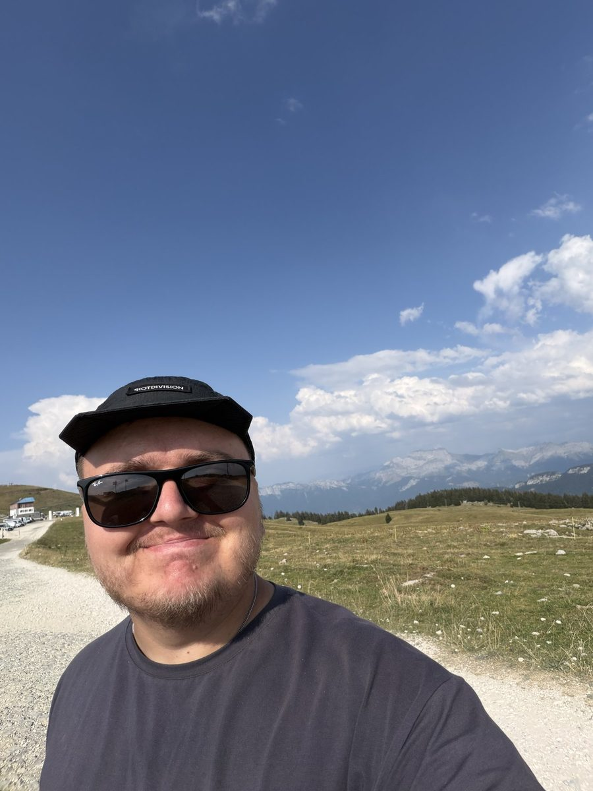

На головну
Архів
Молитовні листи
Раз на місяць я пишу, що Бог робить серед ветеранів: імена, історії, конкретні молитовні потреби — і чесно про те, що не вийшло.


Отримувати наступний лист
Кожна з цих історій сталася, бо хтось молиться й дає щомісяця. Напишіть мені — і наступний лист прийде вам особисто.